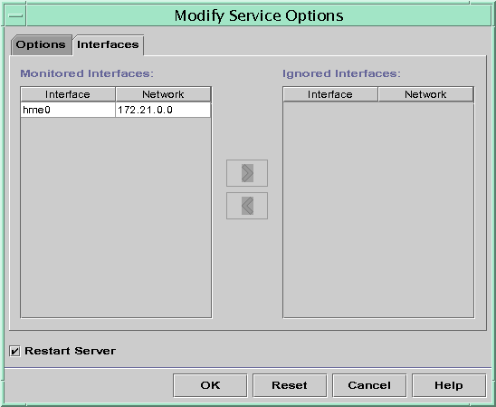

Previous
Previous
Client Host Name Registration
If you let the DHCP server generate host names for the IP addresses that you place in the DHCP service, the DHCP server can register those host names in NIS+, /etc/inet/hosts, or DNS name services. Host name registration cannot be done in NIS because NIS does not provide a protocol to allow programs to update and propagate NIS maps.
Note - The DHCP server can update DNS with generated host names only if the DNS server and the DHCP server are running on the same system.
If a DHCP client provides its host name and the DNS server is configured to allow dynamic updates from the DHCP server, the DHCP server can update DNS on the client's behalf. Dynamic updates can be done even if the DNS and DHCP servers are running on different systems. See Enabling Dynamic DNS Updates by a DHCP Server for more information about enabling this feature.
The following table summarizes client host name registration for DHCP client systems with the various name services.
Table 15-2 Client Host Name Registration in Name Services
Who Registers Host Name | ||
|---|---|---|
Name Service | DHCP-Generated Host Name | DHCP Client-Supplied Host Name |
NIS | NIS Administrator | NIS Administrator |
NIS+ | DHCP tools | DHCP tools |
/etc/hosts | DHCP tools | DHCP tools |
DNS | DHCP tools, if the DNS server runs on the same system as the DHCP server DNS Administrator, if the DNS server runs on a different system | DHCP server, if configured for dynamic DNS updates DNS Administrator, if DHCP server is not configured for dynamic DNS updates |
Solaris DHCP clients can request particular host names in DHCP requests if configured to do so as described in How to Enable a Solaris Client to Request a Specific Host Name. Refer to the vendor documentation for other DHCP clients to determine if the capability is supported.
Customizing Performance Options for the DHCP Server
You can change options that affect the performance of the DHCP server. These options are described in the following table.
Table 15-3 Options Affecting DHCP Server Performance
The following procedures describe how to change these options.
 How to Customize DHCP Performance Options
(DHCP Manager)
How to Customize DHCP Performance Options
(DHCP Manager)
In DHCP Manager, choose Modify from the Service menu.
See How to Start and Stop DHCP Manager for information about DHCP Manager.
Change the desired options.
See Table 15-3 for information about the options.
Select Restart Server.
Click OK.
How to Customize DHCP Performance Options
(Command Line)
If you change options with this procedure, the changed options are used only after the DHCP server is restarted.
Become superuser or assume a role or user name that is assigned to the DHCP Management profile.
For more information about the DHCP Management profile, see Setting Up User Access to DHCP Commands.
Roles contain authorizations and privileged commands. For more information about roles, see "Configuring RBAC (Task Map)" in System Administration Guide: Security Services.
Modify one or more performance options:
# /usr/sbin/dhcpconfig -P keyword=value,keyword=value...
keyword=value can be any of the following keywords:
RELAY_HOPS=integer
Specifies the maximum number of relay agent hops that can occur before the daemon drops the DHCP or BOOTP datagram.
ICMP_VERIFY=TRUE/FALSE
Enables or disables automatic duplicate IP address detection. Setting this keyword to FALSE is not recommended.
RESCAN_INTERVAL=minutes
Specifies the interval in minutes that the DHCP server should use to schedule the automatic rereading of the dhcptab information.
OFFER_CACHE_TIMEOUT=seconds
Specifies the number of seconds the DHCP server should cache the offers that are extended to discovering DHCP clients. The default setting is 10 seconds.
Example 15-1 Setting DHCP Performance Options
The following is an example of how to specify all the command options.
# dhcpconfig -P RELAY_HOPS=2,ICMP_VERIFY=TRUE,\ RESCAN_INTERVAL=30,OFFER_CACHE_TIMEOUT=20 |
Adding, Modifying, and Removing DHCP Networks (Task Map)
When you configure a DHCP server, you must also configure at least one network in order to use the DHCP service. You can add more networks at any time.
The following task map lists tasks that you can perform when working with DHCP networks. The task map includes links to procedures for carrying out the tasks.
Task | Description | For Instructions |
|---|---|---|
Enable or disable the DHCP service on server network interfaces | The default behavior is to monitor all network interfaces for DHCP requests. If you do not want all interfaces to accept DHCP requests, you can remove an interface from the list of monitored interfaces. | How to Specify Network Interfaces for DHCP Monitoring (DHCP Manager) |
Add a new network to the DHCP service. | Places a network under DHCP management, for the purpose of managing IP addresses on the network. | |
Change parameters of a DHCP-managed network. | Modifies the information that is passed to clients of a particular network. | How to Modify the Configuration of a DHCP Network (DHCP Manager) |
Delete a network from the DHCP service. | Removes a network so that IP addresses on the network are no longer managed by DHCP. |
Specifying Network Interfaces for DHCP Monitoring
By default, both dhcpconfig and DHCP Manager's Configuration Wizard configure the DHCP server to monitor all the server system's network interfaces. If you add a new network interface to the server system, the DHCP server automatically monitors the new interface when you boot the system. You can then add any networks to be monitored through the network interface.
However, you can also specify which network interfaces should be monitored, and which interfaces should be ignored. You might want to ignore an interface if you do not want to offer DHCP service on that network.
If you specify that any interface should be ignored, and then install a new interface, the DHCP server ignores the new interface. You must add the new interface to the server's list of monitored interfaces. You can specify interfaces with DHCP Manager or the dhcpconfig utility.
This section includes procedures that enable you to specify which network interfaces DHCP should monitor or ignore. The DHCP Manager procedure uses the Interfaces tab of the DHCP Manager's Modify Service Options dialog box, which is shown in the following figure.
Figure 15-4 Interfaces Tab of Modify Service Options Dialog Box in DHCP Manager
How to Specify Network Interfaces for DHCP
Monitoring (DHCP Manager)
In DHCP Manager, choose Modify from the Service menu.
The Modify Service Options dialog box is displayed.
See How to Start and Stop DHCP Manager for information about DHCP Manager.
Select the Interfaces tab.
Select the appropriate network interface.
Click the arrow buttons to move the interface to the appropriate list.
For example, to ignore an interface, select the interface in the Monitored Interfaces list, and then click the right arrow button. The interface is then shown in the Ignored Interfaces list.
Select Restart Server, and click OK.
The changes you make persist across reboots.